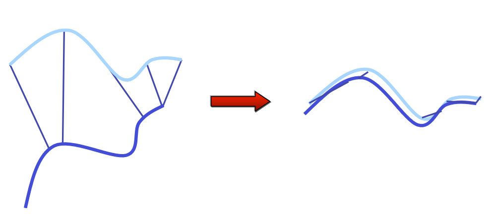
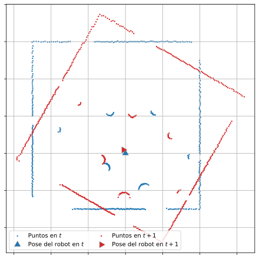

Siendo \(\mathbf{R}^\top\mathbf{R} = \mathbf{I}\) por ser una matriz de rotación y \(\mathbf{p}_i'^\top\mathbf{R}^\top\mathbf{q}_i=\mathbf{q}_i'^\top\mathbf{R}\mathbf{p}_i'\):
donde \(\mathbf{U}, \mathbf{V} \in \Re^{2 \times 2}\) son unitarios y \(\sigma_1 \geq \sigma_2\) son los valores singulares de \(\mathbf{W}\)
Minimización del error \(e\)
Existe un teorema 1 que demuestra que si el rango de la matriz \(\mathbf{W}\) es igual a \(2\), la solución óptima de \(e(\mathbf{R})\) es única y está dada por: \[
\mathbf{R}^* = \mathbf{V} ~\mathbf{U}^\top
\]
La traslación se obtiene reemplazando el valor de \(\mathbf{R}^*\) en \(\mathbf{t}^*\):
import numpy as npdef svd_motion_estimation(p, q):# Centroides mu_p = np.mean(p, axis=1) mu_q = np.mean(q, axis=1)# Centrar las nubes de puntos p_prima = (p - mu_p[:, np.newaxis]) q_prima = (q - mu_q[:, np.newaxis])# Matriz de covarianza cruzada W = q_prima @ p_prima.T# SVD con la librería 'numpy' U, _, Vt = np.linalg.svd(W)# Rotación R = (U @ Vt).T# Corrección por reflexiónif np.linalg.det(R) <0: Vt[-1, :] *=-1 R = (U @ Vt).T# Traslación T = mu_q - R @ mu_preturn R, T
Aplicación a odometría
Una vez obtenidos \(\mathbf{t}^*\) y \(\mathbf{R}^*\), pueden utilizarse para relacionar mediciones consecutivas de LiDAR
def scan_callback(self, msg: LaserScan):# Convertir de coordenada polar a cartesiana q_points =self.laser_scan_to_points(msg)# Si es el primer mensajeifself.previous_points isNone:self.p_points = q_points.copy()return# Termina# Obtener la transformación Rt, Tt =self.svd_motion_estimation( p_points, q_points )# Acumular poseself.pose =self.update_homogeneous_matrix(self.pose, R, T )# Publicar la odometríaself.publish_odometry(msg.header.stamp)# Actualizar el scan para la próxima iteraciónself.p_points = q_points.copy()
def scan_callback(self, msg: LaserScan):# Convertir de coordenada polar a cartesiana q_points =self.laser_scan_to_points(msg)# Si es el primer mensajeifself.previous_points isNone:self.p_points = q_points.copy()return# Termina# Obtener la transformación Rt, Tt =self.svd_motion_estimation( p_points, q_points )# Acumular poseself.pose =self.update_homogeneous_matrix(self.pose, R, T )# Publicar la odometríaself.publish_odometry(msg.header.stamp)# Actualizar el scan para la próxima iteraciónself.p_points = q_points.copy()
Nodo de ROS2
Procesar cada mensaje:
Convertir los puntos a coordenadas cartesianas
Estimar la transformación óptima
def scan_callback(self, msg: LaserScan):# Convertir de coordenada polar a cartesiana q_points =self.laser_scan_to_points(msg)# Si es el primer mensajeifself.previous_points isNone:self.p_points = q_points.copy()return# Termina# Obtener la transformación Rt, Tt =self.svd_motion_estimation( p_points, q_points )# Acumular poseself.pose =self.update_homogeneous_matrix(self.pose, R, T )# Publicar la odometríaself.publish_odometry(msg.header.stamp)# Actualizar el scan para la próxima iteraciónself.p_points = q_points.copy()
def scan_callback(self, msg: LaserScan):# Convertir de coordenada polar a cartesiana q_points =self.laser_scan_to_points(msg)# Si es el primer mensajeifself.previous_points isNone:self.p_points = q_points.copy()return# Termina# Obtener la transformación Rt, Tt =self.svd_motion_estimation( p_points, q_points )# Acumular poseself.pose =self.update_homogeneous_matrix(self.pose, R, T )# Publicar la odometríaself.publish_odometry(msg.header.stamp)# Actualizar el scan para la próxima iteraciónself.p_points = q_points.copy()
Nodo de ROS2
Procesar cada mensaje:
Convertir los puntos a coordenadas cartesianas
Estimar la transformación óptima
Actualizar la pose
Publicar la odometría
def scan_callback(self, msg: LaserScan):# Convertir de coordenada polar a cartesiana q_points =self.laser_scan_to_points(msg)# Si es el primer mensajeifself.previous_points isNone:self.p_points = q_points.copy()return# Termina# Obtener la transformación Rt, Tt =self.svd_motion_estimation( p_points, q_points )# Acumular poseself.pose =self.update_homogeneous_matrix(self.pose, R, T )# Publicar la odometríaself.publish_odometry(msg.header.stamp)# Actualizar el scan para la próxima iteraciónself.p_points = q_points.copy()
Nodo de ROS2
Procesar cada mensaje:
Convertir los puntos a coordenadas cartesianas
Estimar la transformación óptima
Actualizar la pose
Publicar la odometría
Actualizar los puntos
def scan_callback(self, msg: LaserScan):# Convertir de coordenada polar a cartesiana q_points =self.laser_scan_to_points(msg)# Si es el primer mensajeifself.previous_points isNone:self.p_points = q_points.copy()return# Termina# Obtener la transformación Rt, Tt =self.svd_motion_estimation( p_points, q_points )# Acumular poseself.pose =self.update_homogeneous_matrix(self.pose, R, T )# Publicar la odometríaself.publish_odometry(msg.header.stamp)# Actualizar el scan para la próxima iteraciónself.p_points = q_points.copy()
Definición del problema
Caso real: los datos de asociación son desconocidos
Si la correspondencia correcta no es conocida, es casi imposible determinar la rotación y traslación óptima en un solo paso

Definición del problema
Caso real: los datos de asociación son desconocidos
---
displayMode: compact
config:
htmlLabels: false
flowchart:
curve: catmull
---
flowchart TD
A(Correspondencias)
B(Alineación)
A ==>|"`Para encontrar
buenas
correspondencias
necesito una buena
alineación`"| B
B ==>|"`Para obtener una
buena alineación
necesito
correspondencias`"| A
Hipótesis: si la alineación es aproximadamente correcta, los puntos correspondientes deberían estar cerca
Iterated Closest Points (ICP)
Iterar para encontrar el alineamiento
Algoritmo
Proponer correspondencias entre \(\mathcal{P}\) y \(\mathcal{Q}\)
Encontrar el \(\mathbf{R}\) y \(\mathbf{t}\) óptimo para esa correspondencia
Aplicar la transformación y calcular el error
Si el error disminuyó, volver a (1)
Si no, devolver \(\mathbf{R}\) y \(\mathbf{t}\)

Converge si los puntos inciales están lo “suficientemente cerca”
Iterated Closest Points (ICP)
Correspondencias: vecino más cercano (Nearest Neighbor)
Para cada punto en \(\mathcal{P}\) buscamos el punto más cercano en \(\mathcal{Q}\):
Búsqueda exhaustiva: para cada punto en \(\mathcal{P}\) se mide la distancia a todos los puntos de \(\mathcal{Q}\) y se comparan todos los candidatos
\[ d_{ij}=\|\mathbf p_i-\mathbf q_j\| \]
\[ j^*=\arg\min_j d_{ij} \]
Iterated Closest Points (ICP)
Correspondencias: vecino más cercano (Nearest Neighbor)
Problema computacional: Con \(N\) puntos en \(\mathcal{P}\) y \(M\) puntos en \(\mathcal{Q}\) el problema es de orden \(\mathcal{O}(NM)\)
Prueba con 500 puntos: son 250.000 distancias y comparaciones
Si por cada punto se consumen \(\sim 0.25 [ms]\) la búsqueda de vecino más cercano toma alrededor de \(125 [ms]\)
Esto lo debemos acumular por cada iteración del ICP: con 4 iteraciones ya suman \(500 [ms]\)
Para un robot moviendose a \(0.5 [m/s]\) significan \(25 [cm]\) de error
Para un LiDAR a \(10 [Hz]\) se debieron descartar 4 mediciones
Iterated Closest Points (ICP)
Correspondencias: vecino más cercano (Nearest Neighbor)
Posible solución: utilizar KD-Tree
from scipy.spatial import KDTree
Dentro del nodo, crear el árbol usando el vector de puntos p_points de \(N \times 2\):
self.kdtree = KDTree(p_points)
Para obtener las correlaciones:
distances, indexes = tree.query(q_points, # Para cada punto en q k=1, # el vecino más cercano distance_upper_bound=self.max_distance # (opcional) limitar la distancia)
Devuelve \(N\) cuando no encuentra un vecino dentro de la distancia límite
Iterated Closest Points (ICP)
Paso 0: Inicializar
\(k \gets 0 \hspace{3em} \rhd \text{Número de iteración}\)
Dado los conjuntos \(\mathcal{P}\), \(\mathcal{Q}\) y las normales \(\boldsymbol{\eta}_{\mathbf{p}_i}\) asociadas a todos lo puntos en \(\mathcal{P}\), se obtiene la rotación y translación óptima minimizando la función de error:
Si es el primer mensaje almacena los puntos de referencia junto a sus normales
A partir del segundo, para cada mensaje que recibe realiza el procesamiento completo
---
displayMode: compact
config:
htmlLabels: false
---
flowchart LR
B["Mensaje<br/>LaserScan"] --> C["Coordenadas<br>cartesianas"]
C --> D["Segmentar superficies<br>y estimar normales"]
D --> E{"¿Primer scan?"}
E -->|Sí| E2["Almacenar scan<br>y sus normales"]
E2 --> F["Inicializar estado<br>Pose = I"]
E -->|No| H
subgraph ICP[" "]
H["Ejecutar ICP<br>con scan anterior<br>y normales"]
H --> I{"¿Convergió ICP?"}
I -->|No| J["Descartar transformación"]
J .- N
I -->|Sí| K["Construir transformación<br>homogénea"]
K --> L["Acumular pose"]
L --> M["Publicar odometría"]
M --> N["Actualizar scan<br>y normales"]
end
%% ICP -> G
N --> G
J --> G
F --> G["Fin"]
Implementación
Algoritmo ICP
---
displayMode: compact
config:
htmlLabels: false
---
flowchart LR
A["Conjunto P, Q<br/>y normales"] --> B["Inicializar transformación<br>y el arbol de búsqueda"]
B --> C
subgraph ICP["Bucle de iteraciones"]
C{"Máximas<br>iteraciones?"}
C -->|No| D["Asociación<br>Nearest-neighbor"]
D --> E{"Comprobar<br>cantidad<br>de<br>correspondencias"}
E -->|Suficientes| F["Calcular error"]
F --> H["Obtener la<br>transformación<br>óptima"]
H --> I["Actualizar<br>transformación"]
I --> J["Aplicar la<br>transformación<br> a los puntos"]
J --> L{"Disminuyó<br>el error?"}
L -->|Disminuyó| C
end
C -->|Si| G["Fin"]
E -->|No suficientes| G
L -->|No disminuyó| G